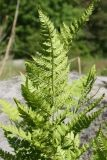
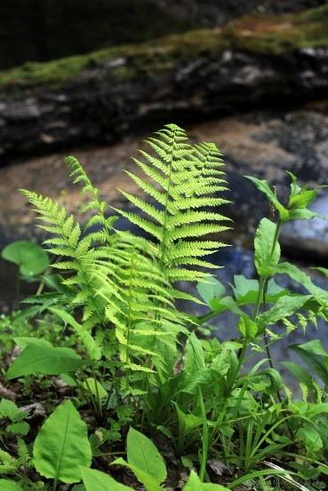
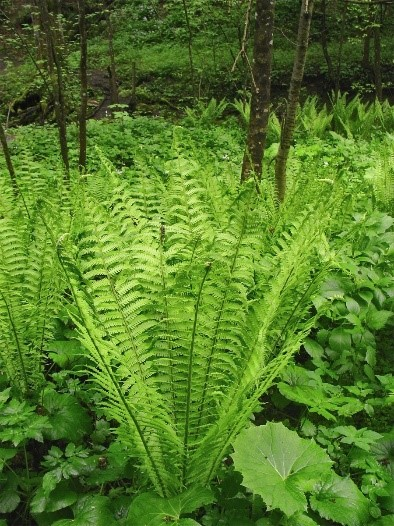

Каталог растений Бузулуцкого бора
Семейство Щитовниковые
Щитовник игольчатый, шартский

Фотограф: Дмитрий Орешкин
Щитовник мужской

Фотограф: Анна Краснобаева
Семейство Оноклеевые
Страусник обыкновенный

Фотограф: Андрей Ковальчук
Подкласс Сальвинииды
Семейство Сальвиниевые
Сальвиния плавающая

Фотограф: Владимир Семашко